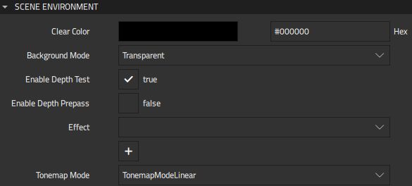
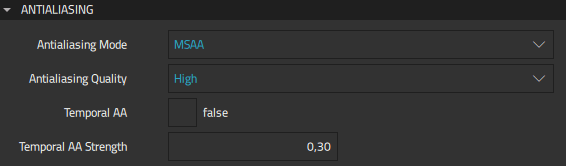
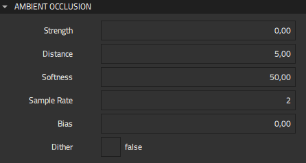
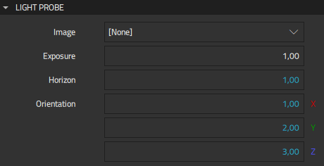

Scene Environment
You can use the Scene Environment component to specify how a scene is rendered globally. You can specify settings for antialiasing, scene background, ambient occlusion, and image-based lighting in the Properties view. The Scene Environment component is available in Components > Qt Quick 3D. It is automatically included under the 3D view component in projects created using the Qt Quick 3D Application wizard template.
Note: If you select Qt 5 as the Target Qt Version when creating your project, the available properties for this component will be slightly different. The properties may also be situated differently in the Properties view.
Setting the Scene Environment
In the Scene Environment section of the Properties view, you can specify whether and how the background of the scene should be cleared, specify whether you wish to perform depth-tests on the scene, apply post-processing effects to the scene, and define how colors are tonemapped before the scene is rendered.

The Clear color property specifies which color will be used to clear the background of the scene if Background mode is defined as Color. Use the color picker to select the color of your choice.
The Background mode property defines whether the background of the scene should be cleared as well as the manner of clearing it. Use the dropdown menu to select one of the available modes:
| Background Mode | Description |
|---|---|
| Transparent | The scene is cleared to be transparent, which is useful for rendering 3D content on top of another item. This mode has no effect when the View3D component is using Underlay or Overlay as the render mode. |
| Color | The scene is cleared with the color specified by the Clear color property. This mode has no effect when the View3D component is using the Underlay or Overlay as the render mode. |
| SkyBox | The scene will not be cleared, but instead a SkyBox or Skydome will be rendered. Define an image as a SkyBox using the Image property in the Light probe section (In Qt 5, the Light Probe property in the Image-Based Lighting group. |
To leave the scene uncleared, select Unspecified as the Background mode.
You can perform depth tests to optimize the scene environment. To skip the depth tests, deselect the Enable depth test checkbox. Note that skipping the tests can cause rendering errors.
To have the renderer write to the depth buffer as part of the color pass, deselect the Enable depth prepass checkbox. Deselecting the checkbox disables the depth prepass on any GPU that uses tiled rendering architecture.
The Effect property defines a post-processing effect to the scene. Use the dropdown menu to select one of the effects that will be applied to the entire scene. The order of the effects is significant since the result of each effect is fed to the next.
The Tonemap mode property defines how colors are tonemapped before rendering. Select ToneMapModeLinear to apply linear tonemapping, which gamma corrects colors and returns them in sRGB color space. You can also select ToneMapModeAces to apply Academy Color Encoding System, ToneMapModeHejlDawson to apply the Hejl-Dawson tonemapping, or ToneMapModeFilmic to apply filmic tonemapping.
Note: The Tonemap mode property is not available in Qt 5.
Applying Antialiasing
Antialiasing is used to make curved lines smoother on the screen. In the Antialiasing section of the Properties view, you can specify the mode and quality of antialiasing and also enable temporal antialiasing and define its strength.

The Antialiasing mode property specifies the mode of antialiasing applied when the scene is rendered. Select one of the following modes using the dropdown menu:
| Mode of Antialiasing | Description |
|---|---|
| MSAA | Applies multisample antialiasing. The scene is rendered in a higher resolution and then scaled down to actual resolution. |
| NoAA | No antialiasing is applied. |
| SSAA | Supersample antialiasing is applied. The edges of geometry are supersampled, resulting in smoother silhouettes. This technique has no effect on the materials inside geometry. |
| ProgressiveAA | Progressive antialiasing is applied. When the content of the scene has stopped moving, the camera is jiggled very slightly between frames, and the result of each new frame is blended with the previous frames. The more frames you accumulate, the better looking the result. |
The Antialiasing quality property sets the level of antialiasing applied to the scene. Define the quality of antialiasing as Medium, High, or Very High. The effect of the selected Antialiasing quality depends on the selected Antialiasing mode, as you can see from the table below. In the SSAA mode the selected quality affects the supersampling resolution, in MSAA it determines the number or samples per pixel, and in ProgressiveAA it defines the number of frames for final image.
| Level of Antialiasing | Supersampling Resolution used in SSAA | Number of samples per pixel in MSAA | Number of frames for final image in ProgressiveAA |
|---|---|---|---|
| Medium | 1.2x | 2 | 2 |
| High | 1.5x | 4 | 4 |
| Very High | 2.0x | 8 | 8 |
Note: With Antialiasing mode set to NoAA, Antialiasing quality does not affect antialiasing.
The Temporal AA property enables temporal antialiasing. This means that the camera is jiggled very slightly between frames, and the result of each new frame is blended with the previous frame.
Note: Temporal antialiasing does not have an effect when the MSAA mode is used.
Note: When combined with ProgressiveAA mode, temporal antialising is used for animations, and ProgressiveAA is used once animations stop.
The Temporal AA strength property modifies the amount of temporal movement in antialiasing. This property only has an effect when the Temporal AA property is set to true.
Note: In Qt 5, the antialiasing properties are located in Properties > Scene Environment.
Applying Ambient Occlusion
Ambient occlusion is a form of approximated global illumination that causes non-directional self-shadowing where objects are close together. You can define the Strength, Distance, Softness, Sample rate, and Bias properties in the Ambient Occlusion section of the Properties view.

You can set the strength of the shadows using the Strength property, which defines the amount of ambient occlusion applied. A value of 100 causes full darkness shadows, while lower values cause the shadowing to appear lighter. A value of 0 disables ambient occlusion entirely, thus improving performance at a cost to the visual realism of 3D objects rendered in the scene. All values other than 0 have the same impact on performance.
The Distance property defines roughly how far the ambient occlusion shadows spread away from objects. Greater distances cause increasing impact to performance.
The Softness property specifies how smooth the edges of the ambient occlusion shading are. The value set for the property must be between 0.0 and 50.0. To improve smoothness at the risk of sometimes producing obvious patterned artifacts, you can scatter the edges of the ambient occlusion shadow bands by selecting the Dither check box.
Note: Large distances between the clipping planes of your camera may cause problems with ambient occlusion. If you are seeing odd banding in ambient occlusion, try adjusting the value in the Clip far field in the scene camera properties.
The Sample rate property specifies the number of shades of gray, thus defining the quality of ambient occlusion at the expense of performance.
The Bias property defines a cutoff distance preventing objects from exhibiting ambient occlusion at close distances. The higher the value, the greater the distance required between objects before ambient occlusion occurs.
Note: If you see ambient occlusion shadowing on objects where there should be no shadowing, increase the value slightly to clip away close results.
Note: In Qt 5, some the ambient occlusion properties are named slightly differently: AO strength, AO distance, AO softness, AO dither, and AO bias.
Setting the Light Probe
In the Light Probe section of the Properties view, you can set the Image, Exposure, Horizon, and Orientation properties for image-based lighting.

The Image property defines an image used to light the scene instead of or in addition to standard lights. The image is preferably a high-dynamic range image or a pre-generated cubemap. Pre-baking provides significant performance improvements at run time because no time is spent on filtering and mipmap generation. If the source is a .hdr or other image, the GPU-based pre-processing happens at run time after loading the image file, which can be potentially time consuming, in particular on embedded and mobile hardware. Therefore, it is strongly recommended that applications pre-process .hdr images at latest at build time, as described here.
Note: In Qt 6, using a Texture component with Image > Source is not supported in combination with this property. Pre-filtering of all mip levels for dynamic Qt Quick content is typically not reasonable in practice due to performance implications. In Qt 5, the Image property is referred to as Light probe, which defines a texture for overriding or setting an image based lighting texture for use with the skybox of the scene.
The Exposure property modifies the amount of light emitted by the light probe.
When defined with increasing values, the Horizon property adds darkness (black) to the bottom half of the environment, thus forcing the lighting to come predominantly from the top of the image (and removing specific reflections from the lower half). This property is useful for accounting for a ground plane that would have the effect of obscuring the reflection of the light probe from the ground. This is necessary because light probe contributions come directily from the image without consideration for the content of the scene. You can set the value of the Horizon property between 0.0 and 1.0. Using the default value of the property applies the entire light probe without adjustment.
Note: The Horizon property only affects materials lighting and has no effect on the rendering of the sky box.
Note: In Qt 5, the Horizon property is referred to as Probe horizon.
The Orientation property defines the orientation of the light probe. Orientation is defined in terms of euler angles in degrees over the x, y, and z axes.
Additional Light Probe Properties in Qt 5
The Probe Brightness property modifies the amount of light emitted by the light probe.
When the Fast IBL (Fast image-based lighting) property is enabled, more shortcuts are taken to approximate the light contribution of the light probe at the expense of quality.
The value of the Probe FOV property sets the angle of the image source field of view when using a camera source as the IBL probe.